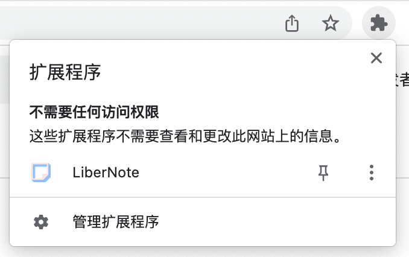
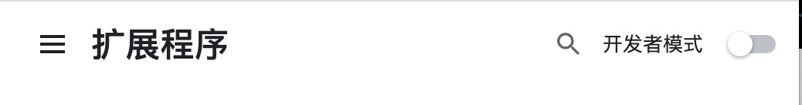
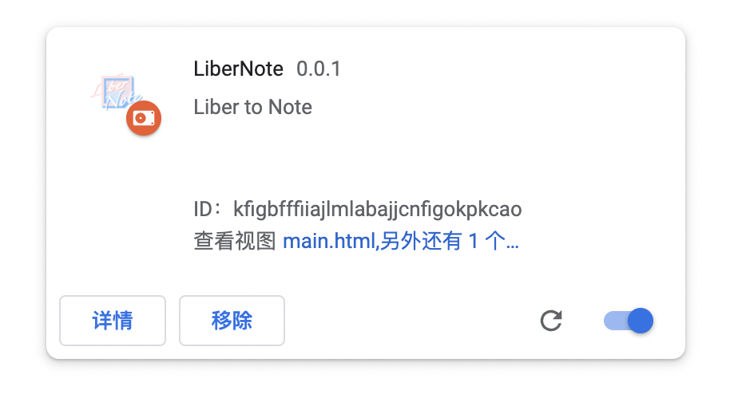
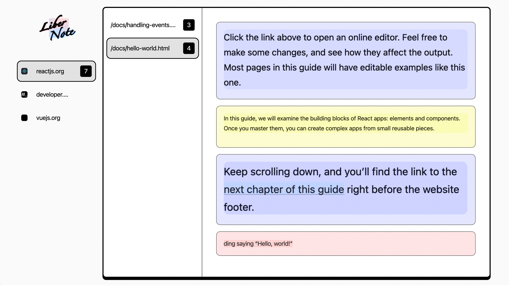
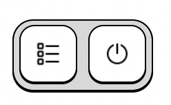
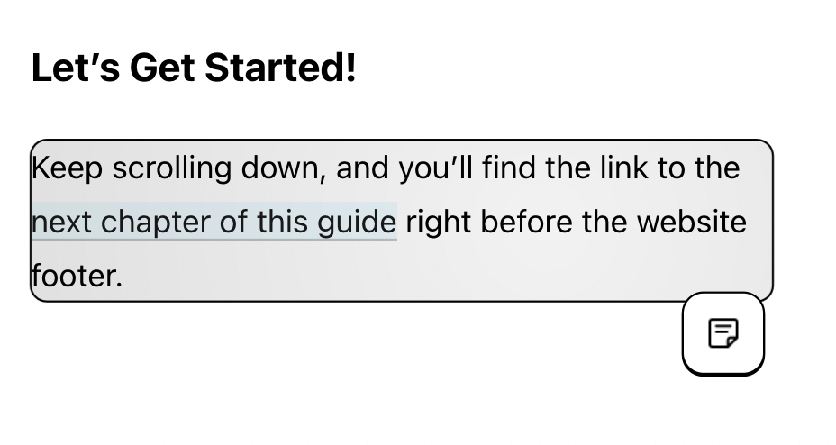
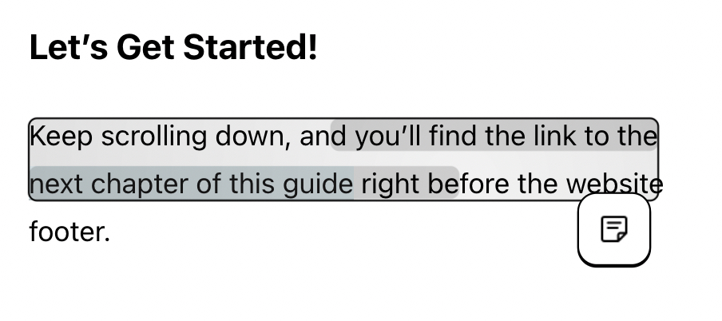
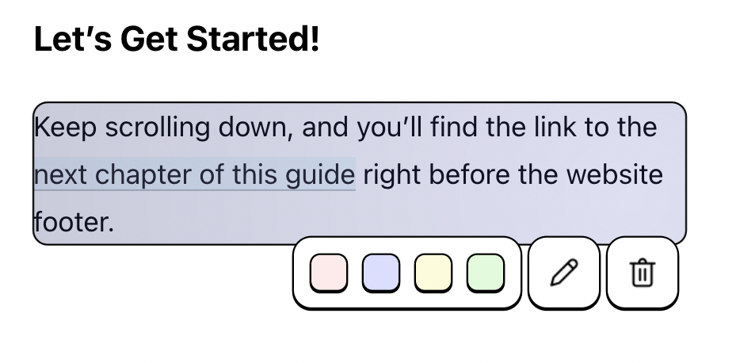
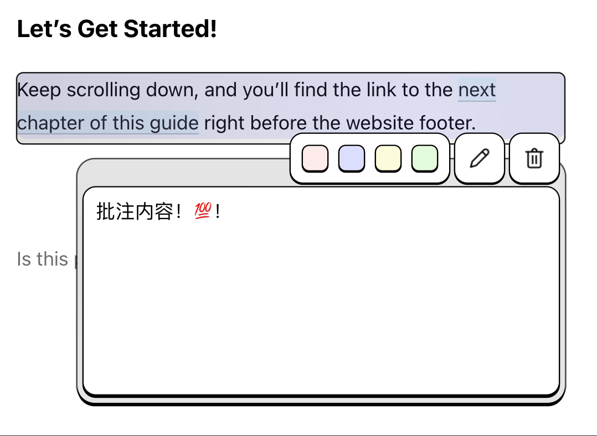

LiberNote Preview Readme
说明
目前为用户功能验证的预览版本，仍有非常多不完善的地方，仅做尝鲜用，推荐在以下网站体验插件：
- reactjs.org
- vuejs.org
- …
安装步骤
- 下载LiberNote_Preview.zip文件并解压
- 打开chrome浏览器(基于chromium的Edge浏览器也能安装，可能会有bug)
- 浏览器顶栏开启插件列表，点击管理扩展程序，打开管理扩展程序页

- 打开开发者模式

- 选择加载已解压的扩展程序，在弹出窗口中选择解压后的Libernote_Preview文件夹
- 完成插件安装，可以开启推荐网站进行插件功能的尝试

基础功能说明
某网站中若开启了LiberNote插件，右下角会出现悬浮窗口，
- 左按钮跳转笔记本页，可以根据目录查看笔记列表。

- 右侧按钮为笔记功能的开关，可以通过长按’e’键或鼠标点击的方式开启笔记功能，关闭同理但无需长按。

开启笔记功能后，可以进行页面内容的选择
- 移动鼠标选择元素

- 划取文字选择文本内容

选中内容后就可以做笔记，按下“标签”按钮可以为选中的内容做下笔记，并可以修改笔记颜色，删除笔记，以及写下批注。

点击“铅笔”按钮开始写批注，输入内容后按下回车完成编辑。附有批注的笔记左上角会有黑边圆点提示。

功能特性
- 元素内容与文本内容都可以做笔记
- 为内容添加笔记无需修改选中的内容本身
- 支持基于前端路由的网页文档
- 直观方便的内容选择方式
- 笔记内容会在下次网页打开后重新显示在网页中，不只是单纯的剪藏。
下一阶段工作
- BUG修复
- 完善笔记本页面功能
- 笔记跳转
- 标签分类
- 笔记搜索
- 完善网页做笔记功能
- 批注内容支持插入其他笔记内容的跳转
- 适配其他Display类型的元素，目前仅完成了对block元素，inline元素的支持
- 完善元素的重定位算法，目前仅简单利用网页层级结构及元素的id与class名称进行定位。
- 丰富样式及自定义选项
- 自适应UI显示，防止UI遮挡
- 接入云存储
- …
目前已知BUG
剪藏笔记时渲染的图片偶尔存在错位
批注中文输入时使用enter确认文本时会产生内容重复
一些渲染错误😭
本博客所有文章除特别声明外，均采用 CC BY-SA 4.0 协议 ，转载请注明出处！